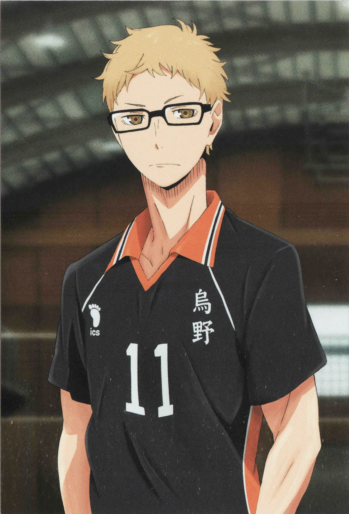

Hinata é o meia central, alguém muito impaciente e alegre, não consegue ficar quieto, mas também tem uma personalidade infantil e é facilmente animado, ele é quem mais se esforça na equipe para perceber se seus cortes podem ser bloqueados, com isso, Shōyō procura maneiras de melhorar. Sua aparência é de "descolado", porém, ele é muito engraçado e nem um pouco estiloso, acabando por ser desajeitado e atrapalhado.
Kageyama é o principal armador da equipe e um dos mais amados pelos fãs, sua atitude é fria e muito paciente, além de ser um cara arrogante no colégio, foi apelidado de "O Rei da Quadra," porém, consegue ser alguém muito hábil em partidas. Visto que seus passes eram curtos, sua antiga equipe não conseguia se adaptar a Kageyama no time, o que ocorreu muitas desavenças, assim, Tobio saiu do colégio.
Daichi é o capitão do Karasuno, além de ser uma pessoa calma, mas quando bastante irritado, se torna muito raivoso. Ele tem um grande atributo, que é motivar sua equipe para continuar a lutar, não desistir, pois o grande poder da motivação é o que ajudará a vencer. Sua aparência parece ser de um delinquente, porém, ele chega longe disto, pois é um cara super tranquilo.
Este é o último jogador do terceiro ano, além de ser um atacante titular e um dos melhores da equipe. Asahi é uma pessoa muito calma e gentil, dessa forma, qualquer comentário ofensivo o deixa deprimido. No início do anime, não jogou devido a estar frustrado, porque antigamente foi bloqueado inúmeras vezes. Depois de falar com Hinata, pensou melhor e começou a jogar vôlei novamente.

Ryū tem a posição de ponta receptor. Ele é o personagem que dá vida a partida, Tanaka fica estressado se não conseguir marcar, porém quando consegue, tira a camisa e comemora com muito fervor. Além disso, seus cortes são bastante fortes, passam facilmente diante a defesa dos adversários.

Kei é o outro bloqueador do time, além de ser um cara legal e não se envolver em problemas. No começo da série, ele parece não gostar de voleibol, estava jogando apenas por jogar e nem se importando se vai ganhar ou perder. Porém, após ver os esforços de todos os integrantes do time, Tsukishima passa a sentir o desejo de melhorar e aprender novas técnicas, para assim se igualar à estrela do time, Shōyō Hinata.

Yū é o líbero da equipe, alguém muito enérgico e sempre faz escândalos, mas durante as partidas demonstra ser sério, tranquilo e com foco no jogo. Suas habilidades na defesa são impressionantes, além de ter capacidade e reflexos que não são para qualquer um, graças a isso, foi apelidado de "O Guardião Divino". Por ser muito rápido em espalmar a bola, rapidamente ele ajuda seus companheiros a armarem o contra-ataque.